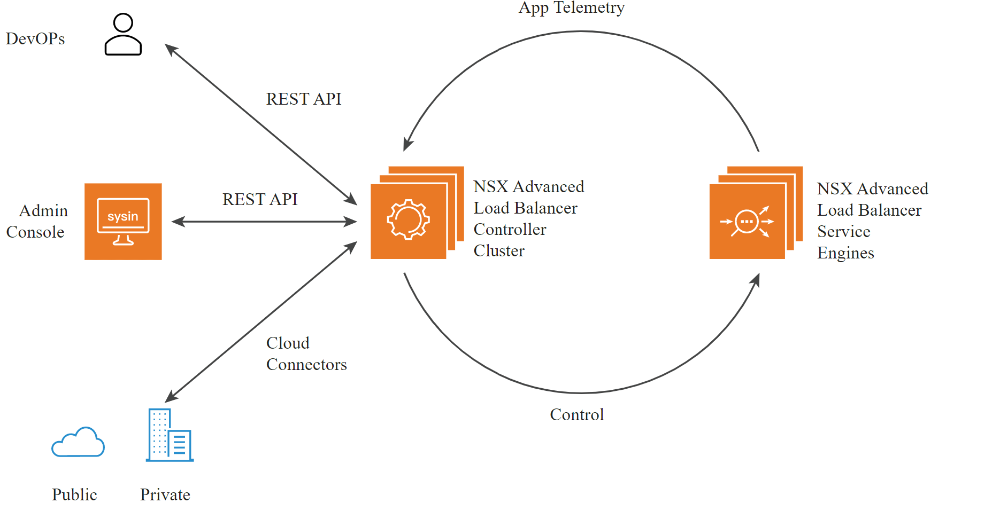
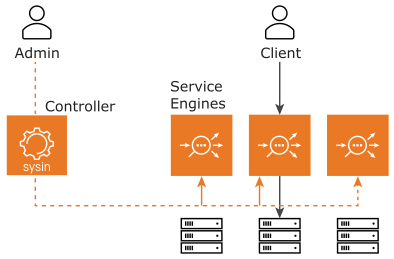
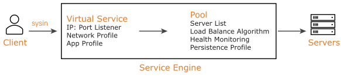

请访问原文链接：VMware NSX Advanced Load Balancer (NSX ALB) 21.1.6 - 软件定义的应用交付平台 查看最新版。原创作品，转载请保留出处。
作者主页：sysin.org
NSX Advanced Load Balancer 概述
NSX Advanced Load Balancer 基于软件定义的原则构建，采用新一代架构，为 IT 部门和业务部门提供所需的灵活性和简化体验。
其架构将数据平面和控制平面分离，不仅提供负载均衡，还可实现应用分析、预测性自动扩展、微分段以及本地或云环境下应用所有者的自助服务。
该平台通过在通用 x86 服务器、虚拟机 (VM) 或容器上集中管理的动态负载均衡资源池 (sysin)，提供细粒度的服务，贴近具体应用。这使得网络服务能够扩展，而无需管理数百台分散设备所带来的额外复杂性。

NSX Advanced Load Balancer 为本地或云部署提供开箱即用的集成。它可与私有云框架、软件定义网络 (SDN) 控制器、容器编排平台、虚拟化环境和公有云进行集成，从而实现即开即用的应用服务和自动化。
NSX Advanced Load Balancer 可集成的生态系统包括：
- Bare Metal (Linux Server Cloud)
- No-Orchestrator Cloud
- VMware vCenter
- VMware NSX-T
- OpenStack
- Amazon Web Services (AWS)
- Microsoft Azure
- Google Cloud Platform
NSX Advanced Load Balancer 由以下组件组成：
- 控制器 (Controller) 或 控制器集群 (Controller Cluster)，作为控制平面。
- 服务引擎 (Service Engines, SEs)，作为数据平面。
⚙️ Control Plane（控制平面）
NSX Advanced Load Balancer Controller 是唯一的管理与控制入口。通常以三节点集群方式部署，以确保高可用性。
控制器实现了控制平面。无论负载均衡的应用数量多少，或需要多少个服务引擎 (SEs)，单个 NSX Advanced Load Balancer 部署都由该控制器集群（通过 FQDN 或集群 IP 地址识别）统一管理。
控制器将虚拟服务分配到 SE 上进行应用负载均衡 (sysin)，无论 SE 是自动创建（写入模式）还是手动创建（只读模式）。在写入模式下，控制器可以与底层编排器配合，根据事件（如创建新虚拟服务或应用负载超出阈值）自动启动新的 SE，实现更高程度的自动化。控制器的 REST API 提供对所有已配置应用（虚拟服务）的可视化，并支持完整的应用生命周期自动化。

🛡️ Control Plane High Availability（控制平面高可用性）
在生产环境中，最佳实践是部署三个 NSX Advanced Load Balancer 控制器组成高可用 (HA) 集群。在集群中：
- 一个控制器作为主节点 (Leader)，负责负载均衡和集群的配置管理。
- 另外两个控制器作为从节点 (Follower)，与主节点协作，收集服务引擎的数据并处理分析数据。
🌐 Data Plane（数据平面）
NSX Advanced Load Balancer SEs 负责所有数据平面的操作，接收并执行来自控制器的指令。
SE 处理负载均衡以及所有面向客户端和服务器的网络交互，同时收集应用流量的实时遥测数据。
在典型的负载均衡场景中：
- 客户端与虚拟服务（一个 IP 地址和端口）通信，该虚拟服务由 SE 托管。
- 虚拟服务内部会将连接经过多个配置文件处理 (sysin)。
- SE 可以终止并代理客户端 TCP 连接，终止 SSL/TLS 会话，并代理 HTTP 请求。
- 验证请求后，它会转发至后端服务器池，选择可用的后端服务器。
此时，SE 会发起一个新的 TCP 连接，使用其内部网络的 IP 地址作为客户端请求的源地址。返回流量也会沿相同路径传输。客户端始终只与虚拟服务的 IP 地址交互，而不会直接与后端服务器 IP 地址交互。

🔁 Data Plane High Availability（数据平面高可用性）
NSX Advanced Load Balancer SE 组支持以下 HA 模式：
- Elastic HA（弹性 HA）：在 SE 故障后为单个虚拟服务提供快速恢复。根据模式不同，虚拟服务可能已在多个 SE 上运行，或会迅速迁移至另一台 SE。支持以下集群 HA 模式：
- Active/Active（主 / 主）
- N + M
- Legacy HA（传统 HA）：模拟双设备硬件的主 / 备 HA 配置。
- 主 SE 处理分配给它的虚拟服务的全部流量。
- 备 SE 作为冗余节点，在主 SE 健康时不承载流量。
下载地址
VMware NSX Advanced Load Balancer (NSX ALB) 21.1.1 | 12 August 2021
- 百度网盘链接：
[EoD]
VMware NSX Advanced Load Balancer (NSX ALB) 21.1.2 | 14 October 2021
- 百度网盘链接：
[EoD]
VMware NSX Advanced Load Balancer (NSX ALB) 21.1.3 | 21 December 2021
- 百度网盘链接：
[EoD]
VMware NSX Advanced Load Balancer (NSX ALB) 21.1.4 | 7 April 2022
- 百度网盘链接：
[EoD]
VMware NSX Advanced Load Balancer (NSX ALB) 21.1.5 | 11 August 2022
- 百度网盘链接：
[EoD]
VMware NSX Advanced Load Balancer (NSX ALB) for ESXi 21.1.6 | 24 November 2022
- 百度网盘链接：https://pan.baidu.com/s/1z8Mp2SASrI2cbCcVZA391g?pwd=e3xn
- 系统要求包含在下载中。
VMware NSX Advanced Load Balancer (NSX ALB) 21.1.6 Full Version | 24 November 2022 | with 21.1.6-2p12 (2024-05-15)
File info:
CLI Packages - Standalone CLI Shell
Name: avi_shell-22.1.6-9092.tar.gz
Size: 18.20 KVMWARE - Controller OVA
Name: controller-22.1.6-9092.ova
Size: 3.88 GBUpgrade - VMware / OpenStack / AWS / KVM / CSP
Name: controller-22.1.6-9092.pkg
Size: 3.64 GBOpenStack / KVM / CSP - Controller Qcow2
Name: controller-22.1.6-9092.qcow2
Size: 3.82 GBMicrosoft Azure - Controller VHD
Name: controller-22.1.6-9092.vhd
Size: 9 GBUpgrade - Container Clouds / Linux Server
Name: controller_docker-22.1.6-9092.tgz
Size: 4.63 GBLinux Server Cloud (Bare Metal) - Docker Install Image
Name: docker_install-22.1.6-9092.tar.gz
Size: 5.81 GBController GCP - Controller GCP
Name: gcp_controller-22.1.6-9092.tar.gz
Size: 3.60 GBContainer Clouds - ServiceEngine Docker Image
Name: se_docker-22.1.6-9092.tgz
Size: 1.17 GB
新版已发布：

文章用于推荐和分享优秀的软件产品及其相关技术，所有软件默认提供官方原版（免费版或试用版），免费分享。对于部分产品笔者加入了自己的理解和分析，方便学习和研究使用。任何内容若侵犯了您的版权，请联系作者删除。如果您喜欢这篇文章或者觉得它对您有所帮助，或者发现有不当之处，欢迎您发表评论，也欢迎您分享这个网站，或者赞赏一下作者，谢谢！
 支付宝赞赏
支付宝赞赏  微信赞赏
微信赞赏赞赏一下
敬请注册！点击 “登录” - “用户注册”（已知不支持 21.cn/189.cn 邮箱）。 请勿使用联合登录（已关闭）。